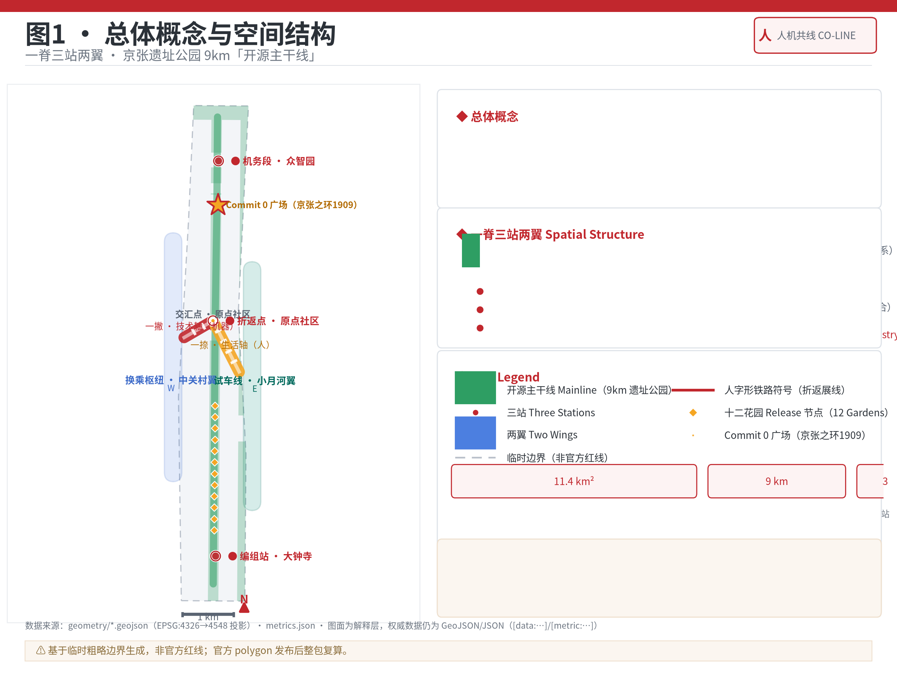
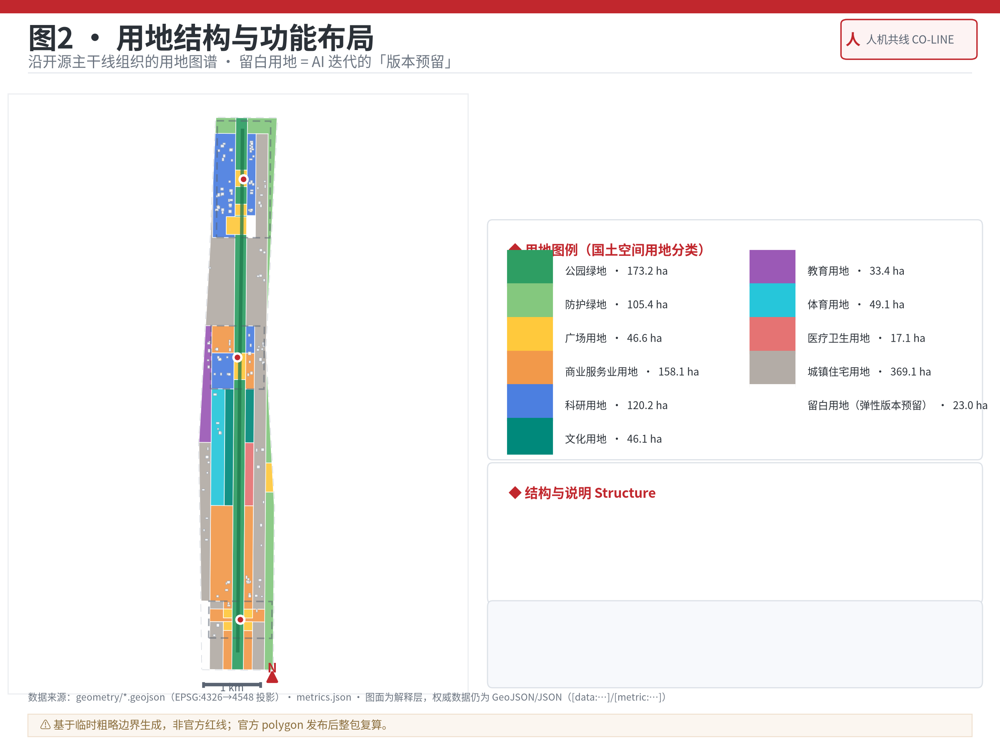
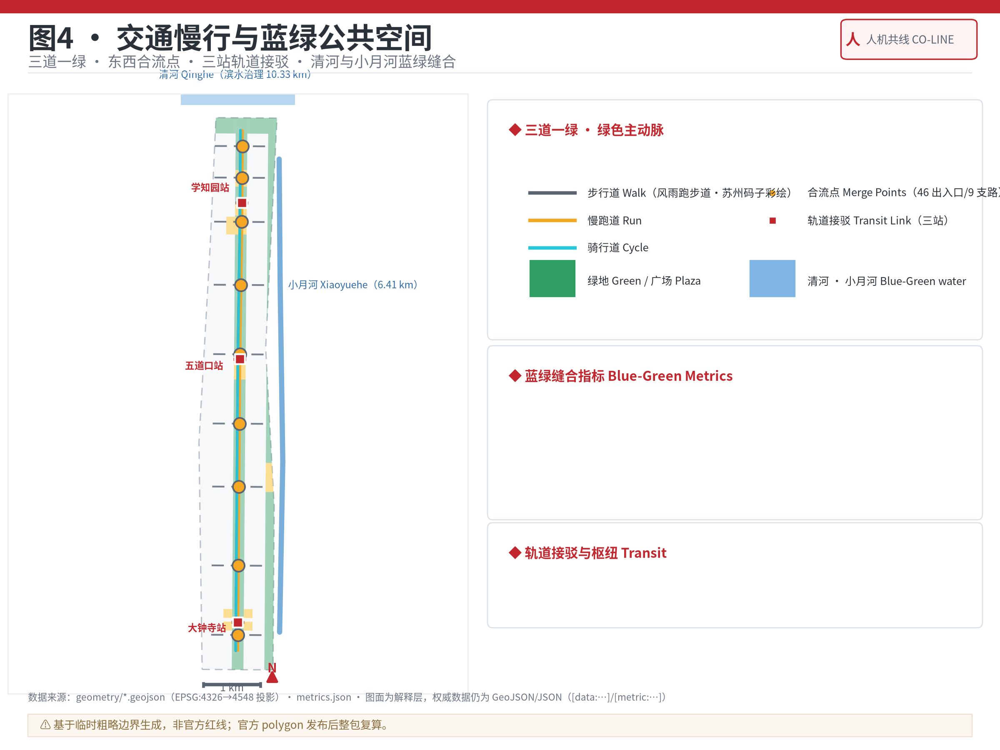
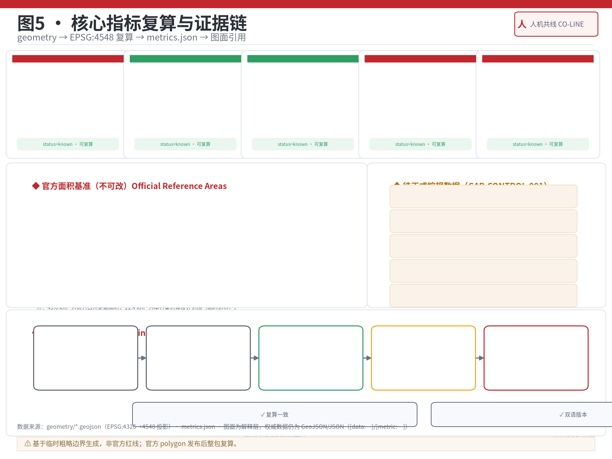

机务段 · 众智园 北 · 192.1ha
Machine Depot · Zhongzhiyuan定位：AI 全栈自主创新体系「牵引段」。以学北园（23.83 万 m²，2026 年 7 月开园）为现实锚点，沿昌平线学知园站组织研发簇群。
- 地下一体化：研发地块以地下廊道连成整体
- 清河界面 + 京张之环1909 → Commit 0 广场
- 五环门户「开源门」+ 对外交通接驳
1909 年，詹天佑在青龙桥以钢轨写下「人」字——用确定的轨道爬升不确定的山势；2026 年，我们沿同一条线写下「人机」——以确定的城市骨架适配不可确定的 AI 迭代。本页为离线电子展示成果：把总览地图、三层范围、重点区域、用地分区、交通慢行、蓝绿公共空间、建筑与更新项目、AI 场景、核心指标、任务覆盖、自检状态、来源与假设转成人类可读的视觉说明。
方案智能体吉祥物：柚子酱 Yuzu-chan —— 冬日暖阳的金色柚子，骑行 9km 开源主干线总体概念、一脊三站两翼空间结构、重点区域索引与 provisional 边界状态合成为一张证据图：公园脊线为主动脉，三站承载 AI 创新链的三段，两翼以横向慢行与轨道接驳咬合。

按公告的三个层次递进组织工作：统筹研究范围定产业与城市形态判断，总体设计范围落到更新与设施承载，重点区域范围验证可实施性。
| 层级 | 面积 | 设计问题 | 本方案回答 |
|---|---|---|---|
| 统筹研究范围 | 43.6 km² | AI 产业生态与未来城市形态如何组织 | 「人机共线」总体概念、命名与 Logo 体系、三区两翼协同回路、8 个全球案例 |
| 总体设计范围 | 11.4 km² | 产业空间、更新、交通市政与风貌如何落图 | 「一脊三站两翼」空间结构、用地布局、更新项目清单、分期实施 |
| 重点区域范围 | 368.4 公顷 | 三处片区如何达到详细设计深度 | 机务段·众智园、折返点·原点社区、编组站·大钟寺各自的空间动作与 AI 场景 |
三处重点片区（key_area_count = 3）按「机务段—折返点—编组站」铁路功能定位组织，各自说明产业定位、空间动作与 AI 场景。
定位：AI 全栈自主创新体系「牵引段」。以学北园（23.83 万 m²，2026 年 7 月开园）为现实锚点，沿昌平线学知园站组织研发簇群。
定位：创新「转向之地」。环清北科 1km 近校生态圈，让科研成果掉头进入产品——人机共线诞生之地。
定位：智能体、智能终端与内容消费的「编组场」，聚合 AI 原生业态为产业列车（12/13 号线枢纽）。
用地沿脊线组织：公园绿地构成绿色主动脉，科研与商业用地沿三站集聚，居住与社区服务沿走廊两侧；「留白用地」在三站周边作为 AI 业态迭代的版本预留。

以 13 号线（13A/13B 扩能）、12 号线、昌平线南延、10/4/15 号线及京张高铁为轨道骨架；依托遗址公园「三道一绿」与 46 个合流点组织主线+支线慢行网络。

以 9km 遗址公园绿廊为脊、北接清河、东联小月河形成「一脊两河」蓝绿网络；主干线无界开放、全天候，构成「一脊多场」公共空间系统与 3 处以上朝圣地标。
城市风貌：以「人字-双轨-苏州码子」为文化符号系统（导视、铺装、装置），延续铁路红 / 钢轨灰 / 高铁白 / 金柚金色彩体系；风雨跑步道已铺苏州码子彩绘，是本叙事线的现成起点。
建筑体量为概念示意：三站核心区 24—60m 混合高度、主干线沿线 12—36m，一律避开遗址公园脊线；拆改留坚持「低扰动、有机更新、可回退」。
更新项目清单（概念建议）：沿铁路遗产活化、低效空间更新、高校周边近校空间三条线索组织，并给出分期实施计划。
| 项目 | 位置 | 类型 | 依赖条件 |
|---|---|---|---|
| Commit 0 广场（京张之环1909 升级） | 众智园南缘 | 公共空间 | 已建成公园载体 |
| 智能体贡献日志墙一期 | 主干线中段 | 公共文化 | 主办方运营机制 |
| 大钟寺站四象限连通 | 编组站 | 交通 / 公共空间 | 轨道站点改造协调 |
| 折返广场 · AI 人才驿站 | 原点社区 | 公共空间 / 服务 | 五道口周边更新 |
| 小月河试车线一期 | 小月河翼 | 场景测试 | 安全监管与公众参与 |
| 近校成果转化街 | 原点社区 | 街区更新 | 高校与产权协调 |
| 西郊冷冻厂 AI 科创园区 | 总体范围 | 低效载体更新 | 权属与控规条件 |
| 学北园研发簇群扩展 | 机务段 | 新建 / 更新 | 已建园区 |
大钟寺四象限连通、折返广场、Commit 0 广场与日志墙一期、试车线一期、苏州码子 AI 导览试点。
机务段地下一体化、开源成果展示廊、12 花园 Release 化、西郊冷冻厂科创园区。
全带城市智能体治理台、京张开源节常态化、「编码文化带」全线贯通。
14 张场景卡覆盖全带（* 为 AI 产业测试验证场景，3 个以上）。每张卡说明空间落点与数据 / 人工复核边界，场景不写成已批准运营。
主干线沿线 append-only 荣誉墙，每块碑 = 一次 commit 条目。
落点 · 主干线沿线 · 公开贡献元数据，人工策展开发者散步道，城市设计决策公开评审。
落点 · 主干线北段 · 规划 / 公众参与复核开源成果展示，建筑仓库实体化。
落点 · 机务段南缘 · 开源公开信息，版权清核风雨跑步道沿线的文化导览（编码百年谱系起点）。
落点 · 风雨跑步道 · 公开史实 + 人工策展文本朝圣地标：京张之环1909，「这条线的第一个提交」。
落点 · 京张之环1909 · 纪念性公共空间，无隐私数据具身智能 / 机器人低速配送实测。
落点 · 小月河翼 · 低速试点边界，交通 / 安全 / 公众参与复核智能终端体验、智能体应用超市、内容消费。
落点 · 编组站 · 商业公开数据，消费隐私保护仅公共服务导航，不越医疗建议。
落点 · 编组站与社区节点 · 医疗 / 法律复核面向开发者的公共服务与成果发布界面。
落点 · 五道口 · 公共服务信息，隐私保护公园沿线低速接驳试点。
落点 · 主干线 · 公开道路 / 轨道资料，交通复核公开数据 + 人工复核清单的城市治理界面。
落点 · 换乘枢纽 + 全带 · 治理机制设计政策、场景、数据、合规、投融资服务网络。
落点 · 换乘枢纽 · 公开政策目录，政策 / 法律复核业外人有感知的公共 AI 触点，公开数据可视化。
落点 · 主干线南段 · 无监控采集年度活动：开发者现场提交，贡献实时写入日志墙。
落点 · Commit 0 广场 · 活动公开信息，安全与秩序复核6 类用户画像：顶尖科研人才、AI 创业者·开发者、园区企业员工、常住居民（含老人家庭）、高校学生·青年、全球开发者访客。
核心指标由 geometry 在 EPSG:4548 投影下复算，与 metrics.json 逐项一致；官方控规指标（FAR 等）未发布，明确显示为待补数据，不渲染为已知数字。

compliance_matrix.json 覆盖公告 1.3 / 1.4 / 1.5 全部任务与 agent.1—agent.6 六项智能体任务；standard_matrix.json 覆盖 6 条专业标准；design_depth_matrix.json 15 个深度项全部 complete。
「人机共线」总体概念、命名与 Logo、一脊三站两翼结构、8 个全球案例。
覆盖机务段·众智园全栈创新，学北园锚点，算力与标准。
覆盖14 张场景卡，试车线 / 编组站测试验证场景，AI 健康导航等。
覆盖Commit 0 广场、贡献日志墙、开源展示廊；一脊多场公共空间。
覆盖「从苏州码子到开源代码」叙事主线，人字-双轨-苏州码子符号系统。
覆盖京张开源节、Commit on the Rail、开发者社区与场景开放运营。
覆盖每条必选任务在 compliance_matrix.json 中映射章节、图层、指标、图纸、HTML 证据与自检项；公告 1.3 / 1.4 / 1.5 的 24 条 requirement 全部覆盖。
deterministic validation、spatial review、visual packaging check 与 professional evidence review 全部通过是进入机器检查与内容评审的基础条件；provisional 边界保留精度警示，不阻断内容评分。
静态 HTML 可视化，无外部依赖（CDN / 脚本 / 字体 / 瓦片）。
正文引用标准、深度项、几何、指标、来源与假设。
用地多边形由 site boundary 划分派生，拓扑通过。
provisional 边界 PASS（intake only）；正式专业评分前须替换为官方红线。
三处重点区 provisional PASS；官方 polygon 发布后替换。
官方 polygon 发布后 site / key areas / land use / roads / green / public / buildings / phasing 与全部 metrics 整链复算。
本方案 formal 引用仅使用经批准的公开来源与清权资料；完整机器索引见 sources.json，专业标准见 standard_matrix.json。
本页不加载 CDN、远程地图瓦片、外部脚本、外部字体、API 请求或 iframe，完全离线可打开；全部图片为本地派生图（assets/figures/*.png）。
版权与 AI 生成责任见 report/copyright_statement.md；苏州码子、詹天佑、京张铁路等文化符号限于公共史实叙述。
全部空间落地、活动运营、品牌传播与政策机制均为概念建议，不构成控规、审批、工程、投资或政府承诺结论；资料缺口在 assumptions.json 中列明并说明对设计结论的影响。